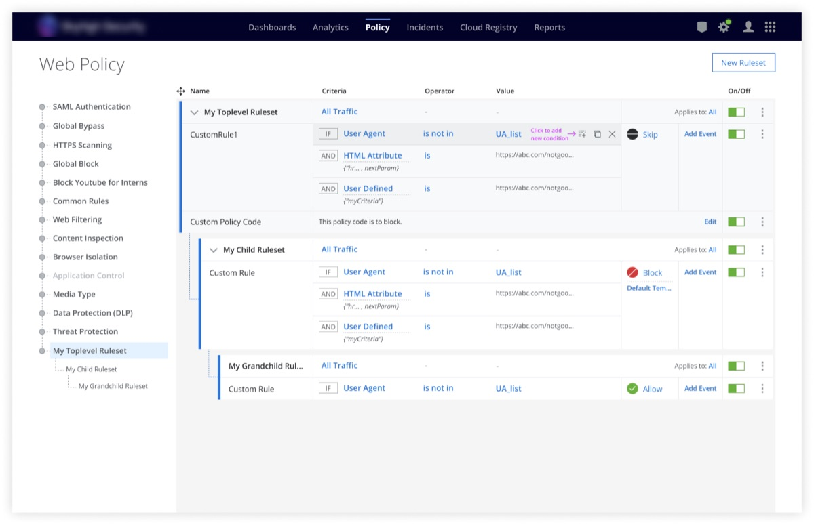
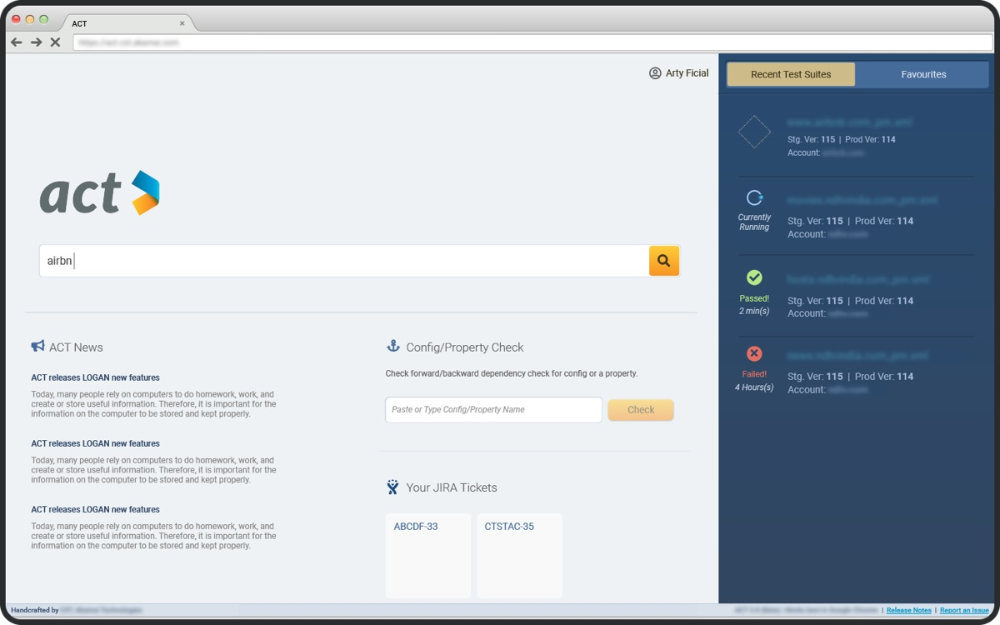

I design complex enterprise products, and increasingly, I build them with AI.
Principal UX DesignerLIQUiDITY, Abu Dhabi
Twenty years of making expert tools usable, from mixing consoles and CDN configuration to cloud security policy. Today I work on private credit, where analysts and investment managers make lending decisions with AI.
Selected work

Web Security Rule Builder
Moving legacy on-premise policies to a cloud web gateway, so security administrators build complex rules in the interface instead of a proprietary language.

Regression Web Testing
Engineers test configuration changes on staging before they reach production.
My recent AI and fintech work at LIQUiDITY is confidential. Ask for a walkthrough.
Building with AI
At LIQUiDITY a single loan is worth USD 10–50 million. I design the AI that helps decide it, and use AI to build faster myself.
- AI chat tool
- An AI workspace for analysts and investment managers, with skills, projects and a home screen for each role.
- MCP apps
- Twelve working interfaces built directly with Claude, reading and writing real data. Designing by hand in Figma, two or three was my realistic limit.
- Design system
- Figma and Storybook kept in sync through Claude. Every component change still goes through front-end review.
- Generative UI
- AI-generated screens that use our own components when the data comes from the system of record.
How I work
Users first, balanced against what the business needs and what engineering can build. When a deadline means setting a principle aside, I say so and note the cost.
I’m self-taught. I started out colouring comics and teaching design tools, and learned UX on the job, shipping enterprise products alongside the PMs and engineers I worked with. Learning that way taught me to pick up a new domain fast, from CDN and cloud security to private credit and AI.
Earlier work
-

Vi3000 console
-

ViSi iPad app
-

Confer Control
Experience
- 2025 – nowPrincipal UX DesignerLIQUiDITY
- 2022 – 2025Senior UX DesignerLIQUiDITY
- 2022UX ManagerSkyhigh Security
- 2021 – 2022UX ArchitectSkyhigh Security
- 2014 – 2021Senior UI EngineerAkamai Technologies
- 2013 – 2014Senior Product DesignerHARMAN
- 2010 – 2013Graphic DesignerAkamai Technologies
- 2005 – 2010Design rolesTesco, The New Indian Express, Image Infotainment, Virgin Comics
From colleagues
“You are an expert in UX and have the ability to listen and transform technical details into high fidelity UX screens and guidance for your engineering counterparts.”
“You are now a pillar of the team.”